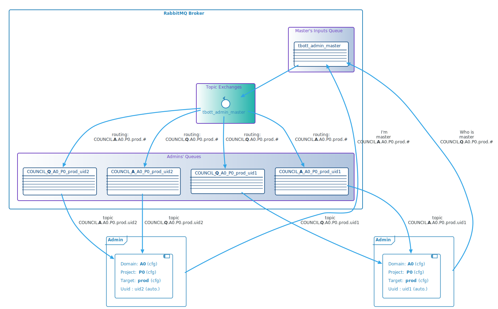
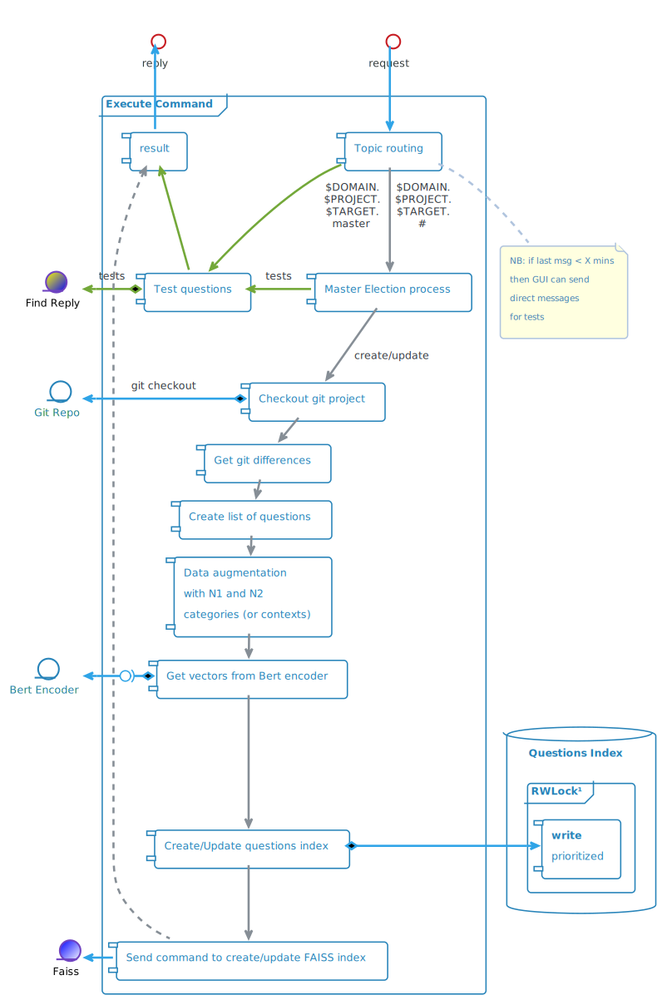

Admin Module
Architecture Overview

Attributes
- Centralise project's data
- Access point for the admin GUI
- Manage an index of Questions and Replies
- This index can be saved on disk (pickle protocol) in a first stage
- In a later development, the use of an Elasticsearch database instead of a local file could be considered
NB: Many parts of previous version of maestro's code can be reused.
Docker Configuration
ENVIRONMENT VARIABLES
Mandatory
- RMQ_IP: RabbitMQ broker FQN or IP
- GIT_SERVER: GOGS FQN or IP
- GIT_BRANCH: Kingdom branch
- DOMAIN: Client's domain name on GIT
- PROJECT: Client's project name
- TARGET: Pod's target (or branch) - ex: prod, test, ...
Optional
- RMQ_USER: tbott
- RMQ_PASSWD: M0m3n773ch
- RMQ_TOPIC: $GIT_DOMAIN.$GIT_PROJECT.$TARGET
- RMQ_EXCHANGE: amq.topic
- ENCODER_QUEUE: tbott-encoder
- RMQ_PORT: 5672
- LOG_LEVEL: INFO
VOLUMES
- logs: mounted in /var/log/supervisor
- data_dir: mounted in /opt/admin
Admin Master election
Messaging architecture
- 2 topic queues:
- Q for questions ($DOMAIN.$PROJECT.$TARGET.Q.#)
- A for answers ($DOMAIN.$PROJECT.$TARGET.A.#)
- All Admin modules see all questions and all answers

State diagram

Admin GUI commands
- Commands are atomics → no need for multithreading
- Commands are adressed to multiple Pods
- Only one pod, the master, reply to all commands

Messaging architecture

Command processing

Messages from Admin GUI:
- Normaly, only an update request is necessary:
{"request" : "update"} - If needed you can pass optional parameters to change the kingdom's branch or the project's branch:
{"request": "update", "kingdom": "training", "branch": "v6" }- A kingdom branch change may be needed when changing the access to other Domains/Projects
- A project branch change may be trigerred by a rollback or a testing procedure
FAISS request example:
{"requests" : ["create"],
"create" : [
{"vector" : numpy.array , "id" : 1},
{"vector" : numpy.array , "id" : 2}
]
}
Questions index example:
{
"git": {"path": DOMAIN/PROJECT
"branch": test,
"commit": git_commit_number
}
"references": {
ref_1: {"ids": [id1, id2],
"categories": {"N1": "n1_cat1", "N2": "n2_cat1"},
"reply": "a reply..."
}
ref_2: {"ids": [id3],
"categories": {"N1": "n1_cat2", "N2": "n2_cat2"},
"reply": "another reply..."
}
}
"all_categories": [{"N1": "n1_cat1", "N2": "n2_cat1"},
{"N1": "n1_cat2", "N2": "n2_cat2"}]
"ids":{
id1: {
"ref": ref_1,
"question": "a quetion",
"augmented": false,
"vector": np.array},
id2: {
"ref": ref_1,
"question": "n1_cat, a quetion",
"augmented": true,
"vector": np.array},
id3: {
"ref": ref_1,
"question": "n1_cat, n2_cat, a quetion",
"augmented": true,
"vector": np.array},
id4: {
"ref": ref_2,
"question": "a 2nd quetion",
"vector": np.array}
}
}
Questions Index queries
- Internal requests from Find Reply module
- Multithreaded
Access the index through a Read/Write Lock with priority on Write
- RWLock lib: https://github.com/elarivie/pyReaderWriterLock
Exemple of context request:
- request:
{ "request": "get_contexts"} - reply:
{ "request": "get_contexts", "result": [{"cat1": [{"cat1": "DDAY"}]}, {"cat1_cat2": [{"cat1": "D-DAY", "cat2": "Bilan"}, {"cat1": "D-DAY", "cat2": "Cimetières"} ]}] }
- request:
Exemple of info request:
- request:
{ "request": "get_candidates", "ids": [1, 2, 3]} - reply:
{ "request": "get_candidates", "result": [{"id": 1, "ref": "DDAY/dday/20", "question": "Quelles sont les plages du débarquement ?", "augmented": false, "reply": "Les 5 plages du débarquement sont ...", "cat1": "D-DAY", "cat2": "Lieux de Batailles"}, {"id": 2, "ref": "DDAY/dday/20", "question": "D-DAY, Quelles sont les plages du débarquement ?", "augmented": true, "reply": "Les 5 plages du débarquement sont ...", "cat1": "D-DAY", "cat2": "Lieux de Batailles"}, {"id": 3, "ref": "DDAY/dday/20", "question": "D-DAY, Lieux de Batailles, Quelles sont les plages du débarquement ?", "augmented": true, "reply": "Les 5 plages du débarquement sont ...", "cat1": "D-DAY", "cat2": "Lieux de Batailles"} ]}
- request: